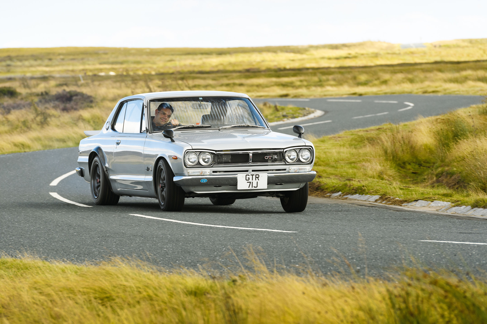
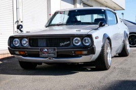
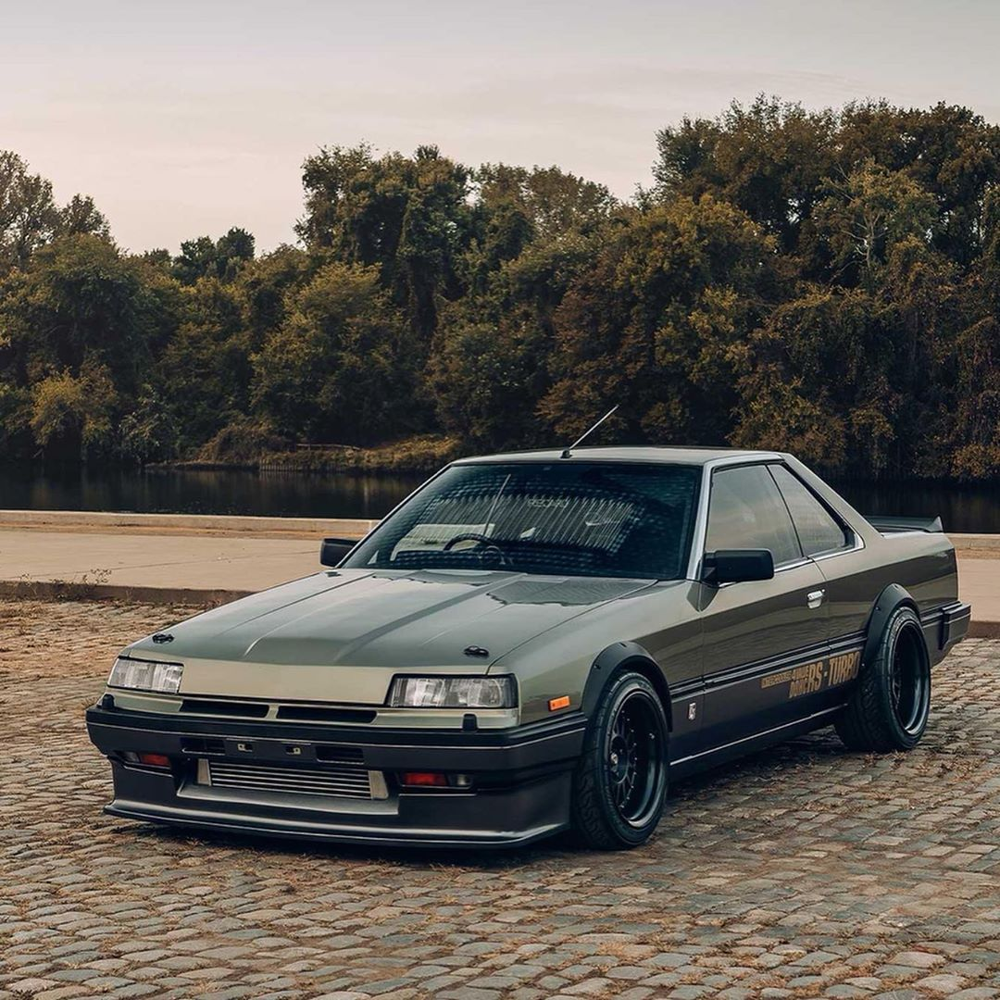
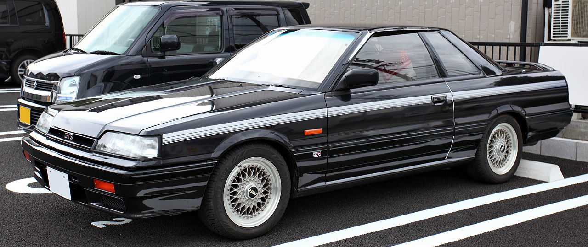
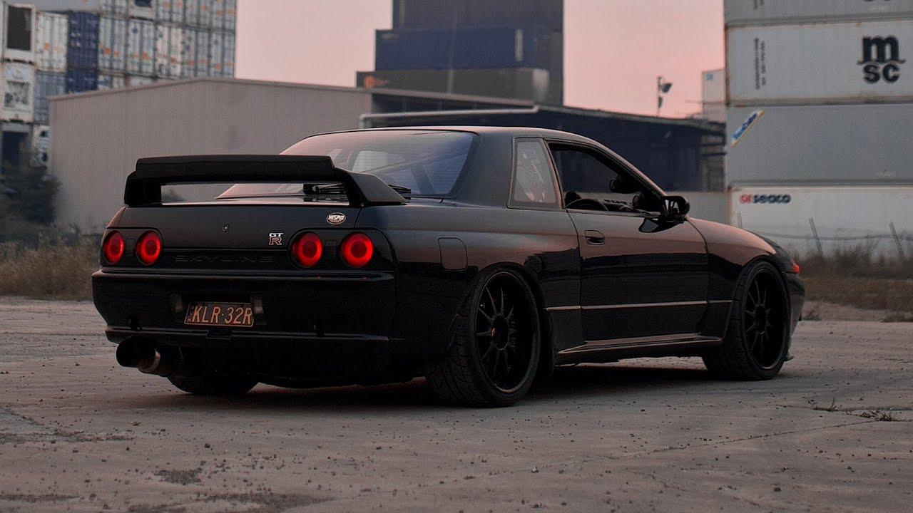
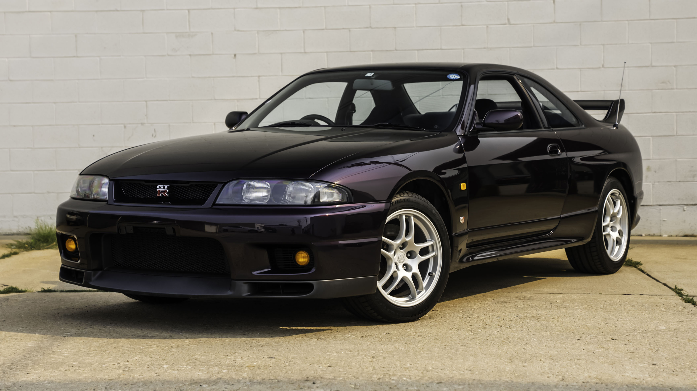
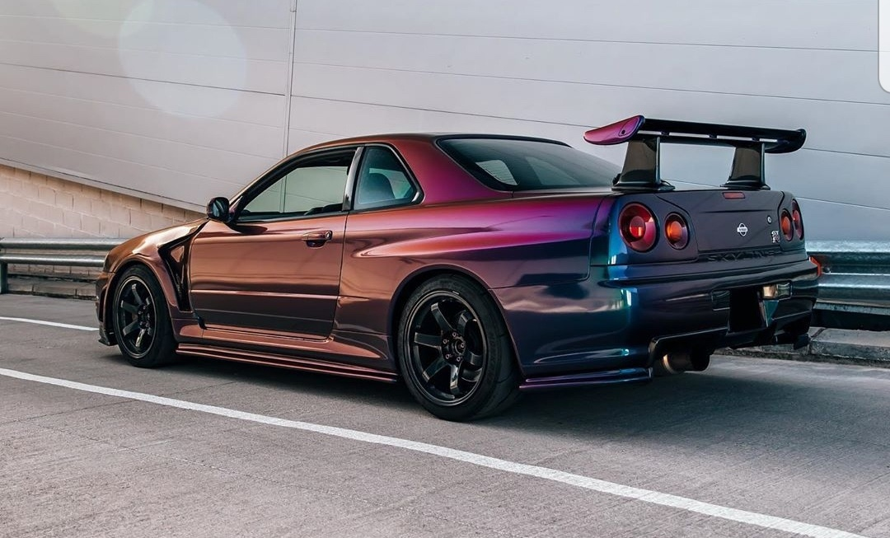
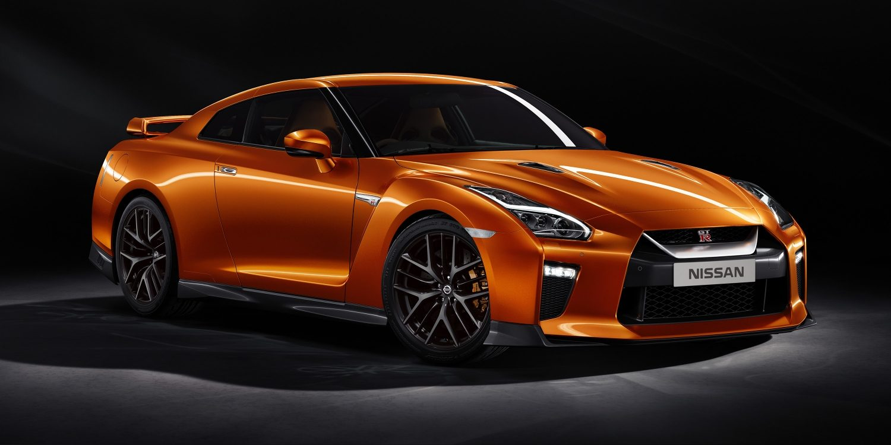

De Hakosuka

De hakosuka heeft een 2.0 liter 6-cilinder motor met 161 pk en 177 Nm.
De Kenmeri

De kenmeri heeft een 2.0 liter 6-cilinder motor met 158 pk en 177 Nm.
De Skyline R30

De R30 heeft een 2.0 liter 4-cilinder motor met DOHC en turbo met 200 pk en 250 Nm.
De Skyline R31

De R31 heeft een RB20DET-R 2.0 liter 6-cilinder motor met turbo en DOHC met 210 pk en 250 Nm.
De Skyline GT-R32

De GT-R32 heeft een RB26DETT 2.6 liter 6-cilinder motor met twee turbo's en DOHC met 300+ pk en 353 Nm.
De Skyline GT-R33

De GT-R33 heeft een RB26DETT 2.6 liter 6-cilinder motor met twee turbo's en DOHC met 300+ pk en 353 Nm.
De Skyline GT-R34

De GT-R34 heeft een RB26DETT 2.6 liter 6-cilinder motor met twee turbo's en DOHC met 300+ pk en 353 Nm. De R34 kwam in meer dan 5 varianten; V-spec, V-spec II, V-spec II nur, M-spec, M-spec nur en Nismo Z-tune.
De Nissan GT-R

De GT-R35 heeft een VR38DETT 3.8 liter V6 motor met twee turbo's met 487 pk en 588 Nm. De GT-R kan je niet meer een skyline noemen nissan zei het zelf maar het blijft nog steeds een GT-R.